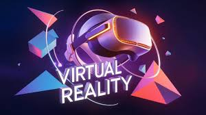

Virtual Reality: Beyond Gaming

Virtual Reality (VR) has long been synonymous with the gaming and entertainment industry, creating immersive
experiences for users in the digital realm. However, the transformative potential of VR extends far beyond
the gaming console. In this article, we delve into the multifaceted impact of virtual reality across various
industries, exploring its applications in healthcare, education, real estate, collaborative work
environments, tourism, and beyond.
The Current Landscape of Virtual Reality
The current state of VR technology is marked by rapid advancements and widespread adoption, particularly in
gaming and entertainment. According to recent statistics, the global VR gaming market is projected to reach
unprecedented heights, with an annual growth rate exceeding 30%. This success has propelled the technology into
the mainstream, setting the stage for its exploration and integration into diverse industries.
Healthcare Revolution: VR in Medicine
Overview of VR Applications in Medical Training
Virtual Reality has emerged as a game-changer in medical training, offering realistic simulations for aspiring
healthcare professionals. Medical students can now engage in virtual surgeries, gaining practical experience in
a risk-free environment. Surgical simulations reduce the learning curve and enhance the skills of future
surgeons.
Surgical Simulations and Virtual Procedures
The application of VR in surgical simulations goes beyond basic training. Surgeons can practice complex
procedures, refine their techniques, and even plan surgeries using VR simulations. This not only improves
surgical precision but also contributes to better patient outcomes by reducing the margin of error.
VR’s Role in Patient Therapy and Mental Health Treatments
Beyond the operating room, VR has found its way into patient therapy and mental health treatments. Virtual
environments are leveraged to treat conditions such as PTSD and anxiety disorders. Patients can confront and
overcome fears in a controlled and supportive virtual setting, showcasing the versatile therapeutic potential of
VR.
VR’s Role in Education and Training
Virtual Classrooms and Immersive Learning Experiences
As technology continues to reshape education, Virtual Reality has emerged as a tool for creating virtual
classrooms and immersive learning experiences. This allows students to transcend geographical boundaries and
engage in collaborative learning environments. VR also enhances understanding by providing hands-on experiences,
making complex subjects more tangible.